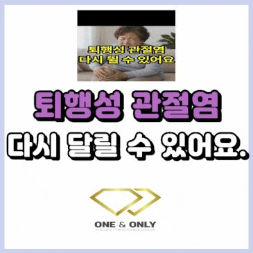
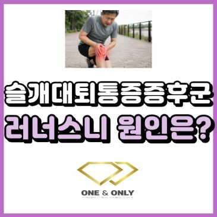

무릎재활 · 부산교대
부산 무릎재활 PT
퇴행성 관절염, 십자인대·반월판 수술 후 재활, 계단과 스쿼트에서 아픈 무릎. 무릎만 보지 않고 고관절과 발목까지 함께 보면서 1:1로 운동합니다.
이런 무릎 통증으로 많이 오세요
- 퇴행성 관절염
- 계단을 오르내리거나 오래 걸으면 무릎이 아프고, 쉬어야 할지 움직여야 할지 고민되는 경우
- 십자인대·반월판 수술 후
- 병원 재활을 마쳤지만 뛰기, 점프, 방향 전환이 아직 불안한 경우
- 계단에서 아픈 무릎
- 내려갈 때나 올라갈 때 무릎 앞쪽이 시큰하고 아픈 경우
- 스쿼트·러닝할 때 아픈 무릎
- 운동을 좋아하는데 할 때마다 무릎이 신경 쓰이는 경우
- 평가무릎뿐 아니라 고관절과 발목 가동범위, 한 발 서기, 계단·스쿼트 동작, 근육별 수축 능력(MAT)을 확인합니다.
- 원인 찾기무릎에 부담을 주는 곳을 찾습니다. 엉덩이와 허벅지 근육의 기능, 발목이 덜 움직여 무릎이 대신 움직이는 패턴이 대표적이에요.
- 내 몸에 맞는 움직임Motor Control로 무릎 정렬과 체중 싣는 법을 다시 익혀, 계단과 앉았다 일어서기를 편하게 만듭니다.
- 운동STC, 기능성 운동, 근력 운동으로 걷기·계단·스쿼트·달리기까지 단계적으로 복귀합니다.


관련 블로그 글
블로그 보기 ↗ 스쿼트 무릎 통증 왜 생길까요?스쿼트할 때 무릎 통증 생기는 분들 있으시죠? 과연 근육이 없어서 스쿼트할 때 무릎 통증이 생길까요? 오늘 포스팅을 보시면 조금 생각이 바뀔 수…
스쿼트 무릎 통증 왜 생길까요?스쿼트할 때 무릎 통증 생기는 분들 있으시죠? 과연 근육이 없어서 스쿼트할 때 무릎 통증이 생길까요? 오늘 포스팅을 보시면 조금 생각이 바뀔 수…
부산재활PT 퇴행성 관절염 운동 후기, 다시 달릴 수 있어요.부산재활PT 퇴행성 관절염 운동 후기 퇴행성 관절염인 분들도 다시 달릴 수 있어요. 무릎이 아파서 계단 오르내리기도 힘드신 적 있으신가요? "계…
슬개대퇴통증증후군이란?(PFPS) 러너스니 무릎 앞쪽 통증 원인 정리해 드릴게요.무릎 앞쪽이 욱신거리고 아프신가요? 계단을 오르거나 내려갈 때 무릎이 시큰거리신가요? 또는 오래 앉아 있다가 일어날 때 무릎 앞쪽이 뻐근하고 불…
자주 묻는 질문
무릎재활 상담 전에 많이 물어보시는 것
- 퇴행성 관절염인데 쉬어야 하나요, 운동해야 하나요?
- 퇴행성 관절염은 대부분 적절한 운동이 관리의 기본으로 권장됩니다. 무작정 쉬기보다 통증 반응을 보면서 강도를 조절해 움직이는 것이 중요해요. 무릎이 갑자기 붓고 열이 나거나 체중을 싣기 어려울 정도로 아프면 먼저 진료를 받으세요.
- 십자인대·반월판 수술 후 언제부터 PT를 받을 수 있나요?
- 수술한 병원의 재활 일정과 의료진 지침을 따른 뒤, 허용된 범위에서 근력, 균형, 점프, 방향 전환 순서로 단계적으로 진행합니다. 상담 때 수술 시기와 병원 주의사항을 알려주세요.
- 무릎에서 소리가 나는데 괜찮을까요?
- 통증이나 붓기 없이 나는 소리는 흔하고 대부분 문제가 되지 않습니다. 소리와 함께 아프거나, 무릎이 걸리는 느낌이 있거나, 갑자기 힘이 빠지면 진료와 평가가 필요합니다.
어디가, 언제부터 불편한지
편하게 말씀해 주세요
첫 시간은 상담과 움직임 평가부터 진행합니다.